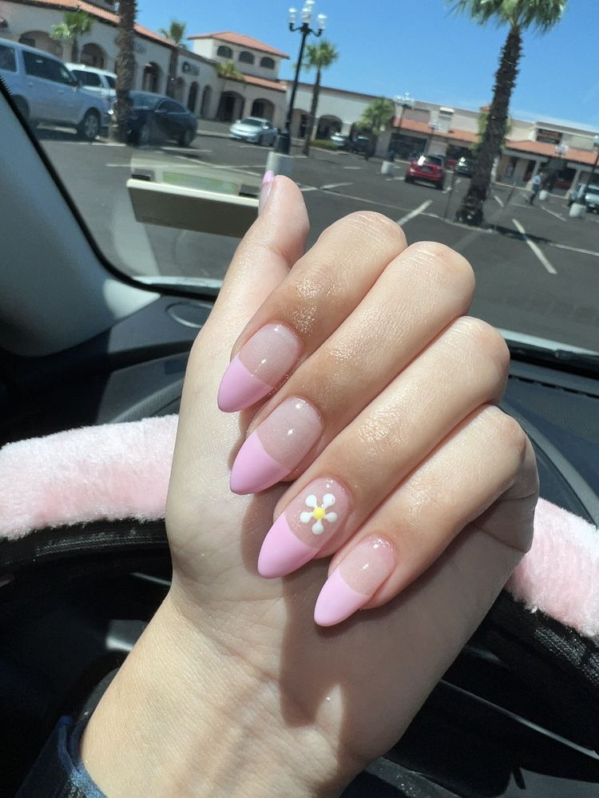
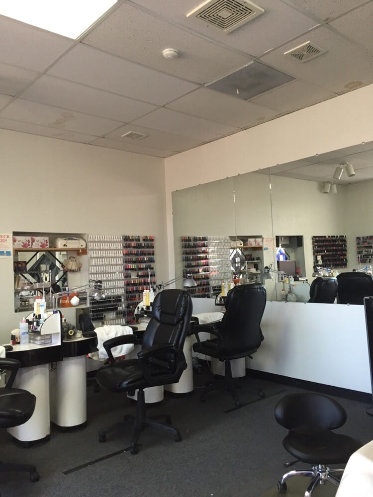
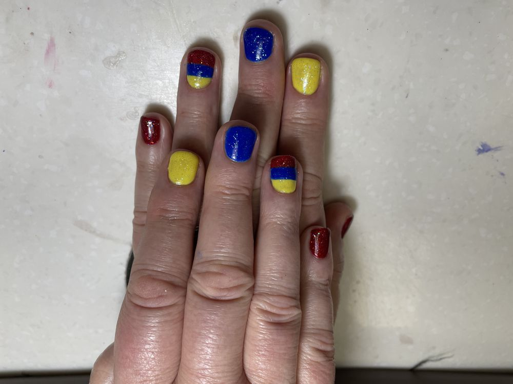
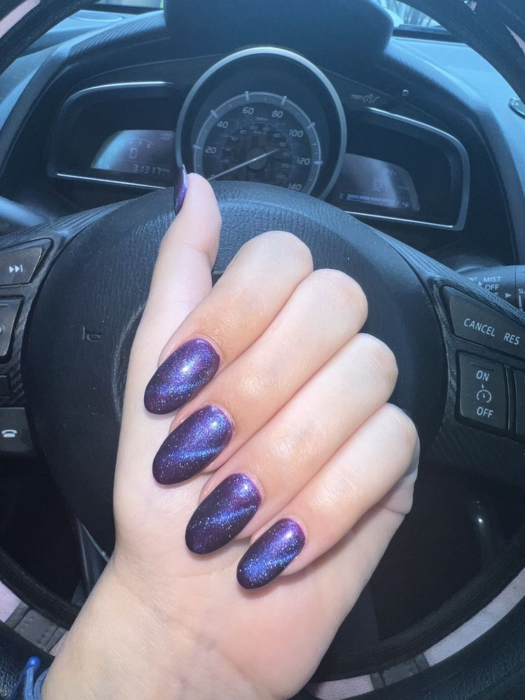
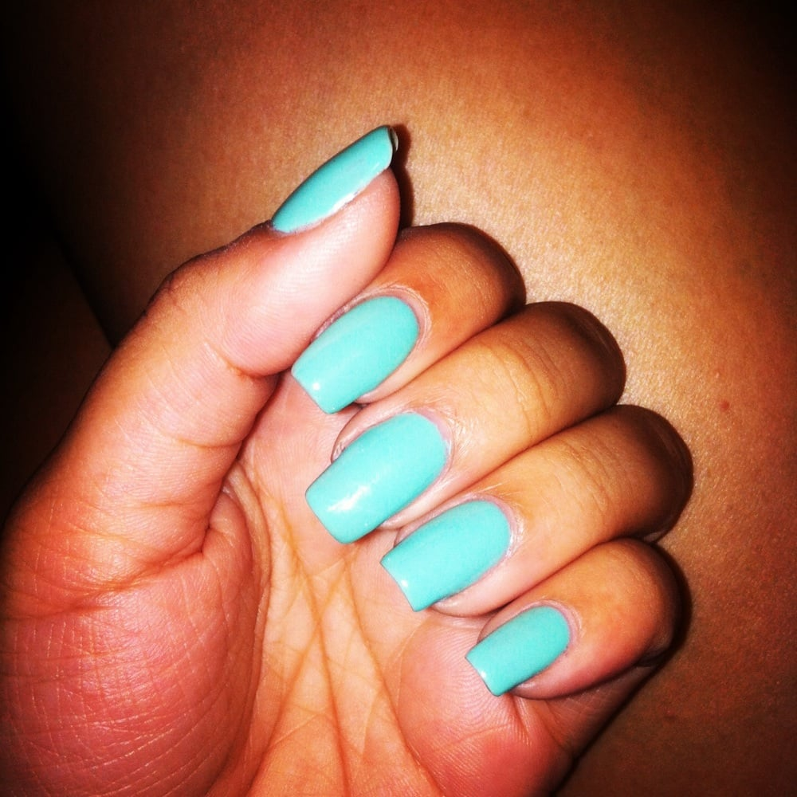
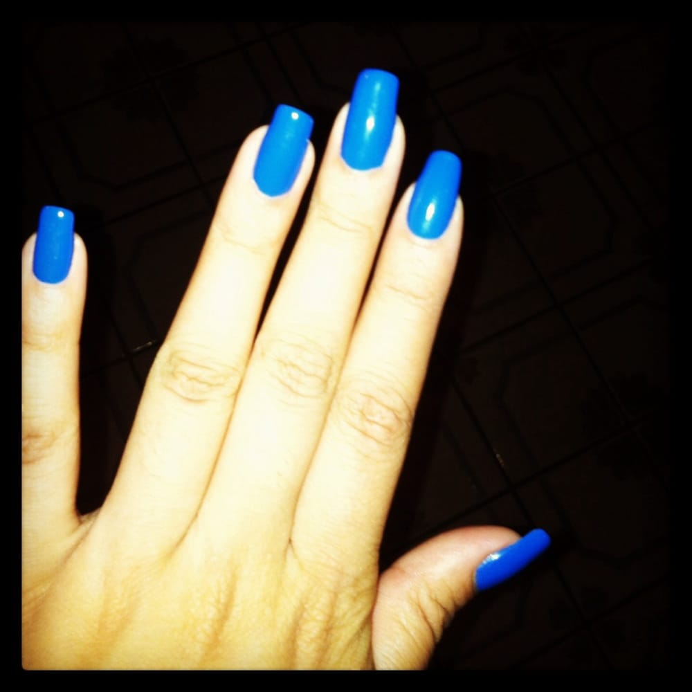

Appointment-only nail salon on East Broadway
A small salon where the same hands do your nails, visit after visit.
Number 1 Nails is a small appointment-only nail salon in Tucson, also listed as Number One Nails By Thi. The same technicians see the same customers year after year, so a visit feels like catching up with people who already know what you like.
Call to book: +1 520-326-3210Appointments are required. Call a few days ahead to get the time you want.

The salon

The space was remodeled in recent years. The pedicure chairs and workstations are neat and well kept. Customers note the room is clean and the technicians keep conversation low.
Technicians Jessica, Lee and Alex have regulars who book with them again and again. Made-in-USA polishes are on the shelves, and small items like personal foot scrubbers are available to buy.
The salon is cash only. There is no online booking. Call to book an appointment.
Work from the salon




Ask for
Ask for Jessica for intricate nail art and custom designs, and for gel manicures. Reviewers call her gel work meticulous, with thorough cuticle cleanup.
Ask for Lee for gel nails.
Ask for Alex for delicate nail work, help with nail-biting habits, and careful pedicure work. Alex is the one clients ask for when toenails need patient attention.
Visit
2900 E Broadway Blvd #178, Tucson, AZ
Monday through Saturday, 9 AM to 7 PM. Closed Sunday.
Appointment only. Cash only. Plan your visit